Могилев: Путешествие во времени
Этот сайт позволяет исследовать историю Могилёва в разные эпохи. Пользователь может изучать достопримечательности, просматривать архивные фотографии и совершать виртуальные маршруты по городу
История Могилева
Могилев — один из древнейших городов Беларуси, основанный более 750 лет назад. Первое упоминание о нём в исторических источниках относится к 1267 году, когда на высоком холме у впадения реки Дубровенки в реку Днепр был заложен замок, вокруг которого начал формироваться будущий город. С XIII века Могилёв развивался как важный укреплённый центр на пересечении торговых путей. В XIV—XVI веках он входил в состав Великого княжества Литовского, а после Люблинской унии 1569 года стал частью Речи Посполитой. В 1577 году город получил магдебургское право — важный знак самостоятельного городского управления и развития ремёсел. В XVII веке Могилёв был центром торговли и культуры. Однако город пережил военные осады и разрушения, например в годы Русско-польской войны и Северной войны. После Первого раздела Речи Посполитой (1772) Могилёв вошёл в состав Российской империи и стал административным центром Могилёвской губернии. В годы Первой мировой войны (1915-1917) здесь находилась Ставка Верховного главнокомандующего Российской армии, которую посещал император Николай II. После революции 1917 года Могилёв несколько раз переходил из рук в руки: в 1918 году он был оккупирован германскими войсками, затем включён в состав Советской Белоруссии. В Вторую мировую войну Могилёв был оккупирован нацистами (1941–1944). Это тяжёлый этап: многие жители, в том числе значительная часть еврейской общины, погибли в ходе Холокоста.
Восстановление и современность
После освобождения в 1944 году город был восстановлен, а в советское время стал крупным промышленным центром. С распадом СССР в 1991 году Могилёв остался важным культурным и экономическим центром независимой Беларуси.
Эпохи города Могилев
Музеи и достопримечательности
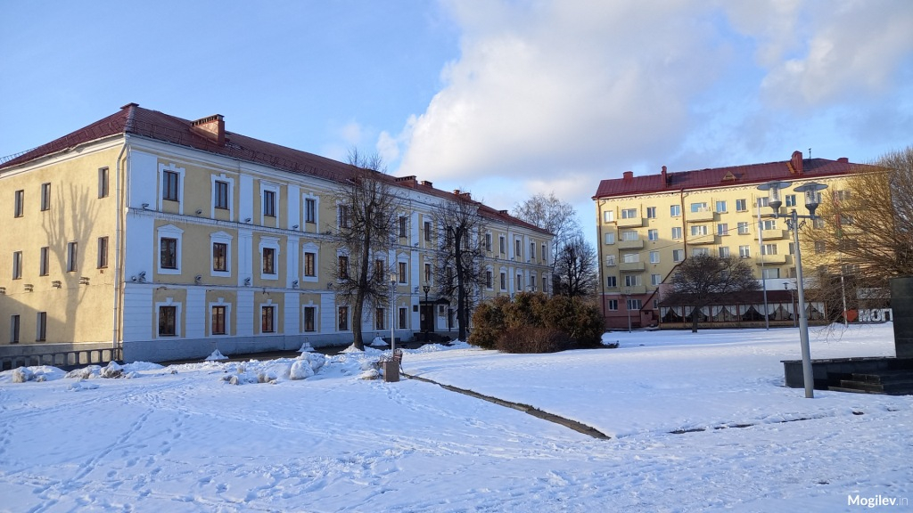
Могилевский областной краеведческий музей им. Е.Р. Романова
Могилевский областной краеведческий музей им. Е.Р. Романова
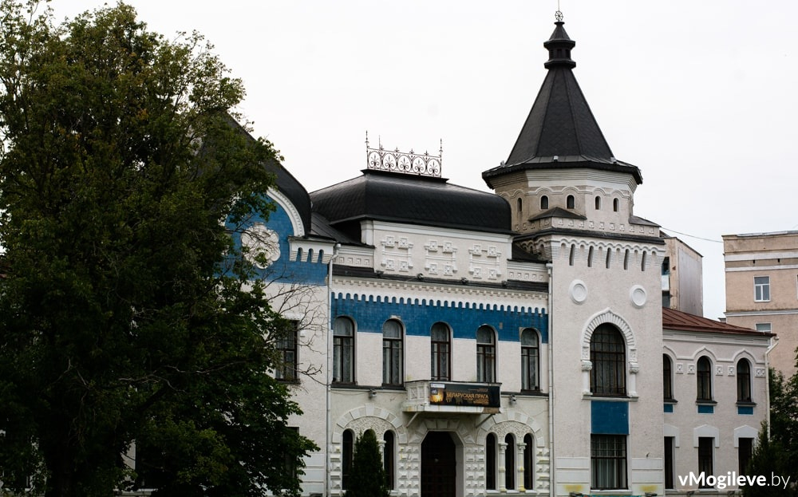
Могилёвский областной художественный музей имени П.В. Масленикова
Могилёвский областной художественный музей имени П. В. Масленикова был основан 19 ноября 1990 года и размещается в здании, которое является памятником архитектуры ХХ века
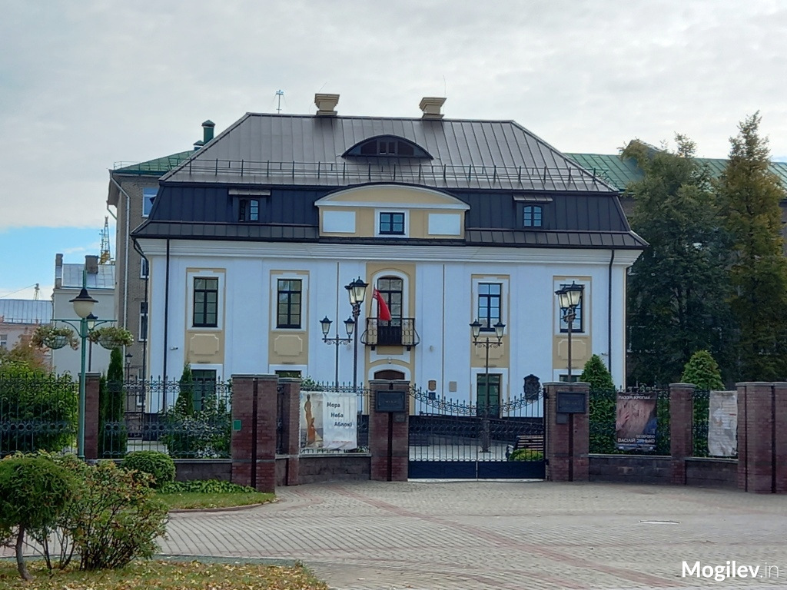
Музей В.К. Бялыницкого-Бирули
Mузей известного белорусского пейзажиста Витольда Бялыницкого-Бирули (1872 – 1957), работами которого восхищался Илья Репин. Дом, в котором родился художник в небольшом селе Крынки близ Белынич Могилевской губернии в 1872 г., не сохранился. Поэтому музей – филиал НХМ Беларуси – был открыт в могилевском особняке XVII века.
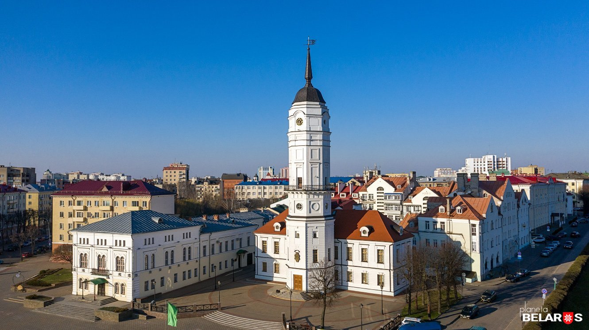
Могилевская ратуша
В Беларуси всего несколько городских ратуш, одна из них находится в Могилеве. Город на Днепре получил магдебургское право (право на самоуправление) в 1577 году. В 1578 началось возведение городской ратуши — символа самоуправления и места размещения городского магистрата. Первоначально ратуша была деревянной, несколько раз сгорала дотла и её местонахождение менялось.
Хотите опубликовать статью на нашем сайте?
Оставьте свои контактные данные и наш менеджер свяжется с Вами для публикации статьи!
Галерея
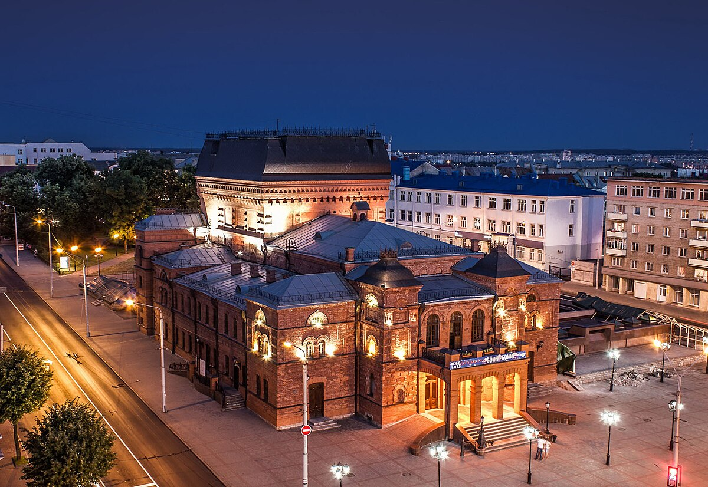
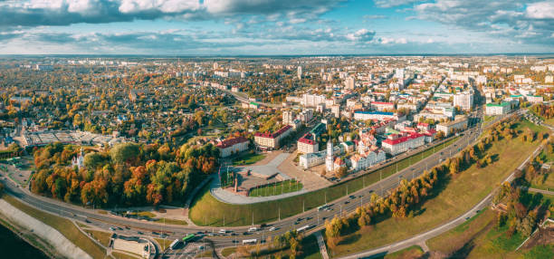
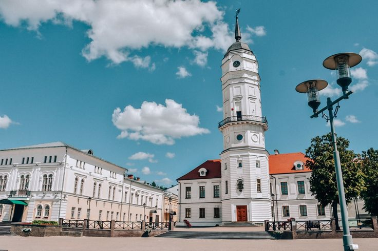
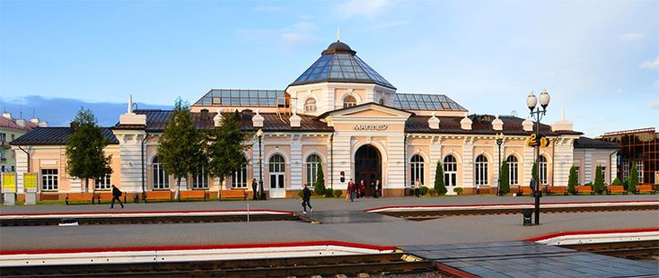
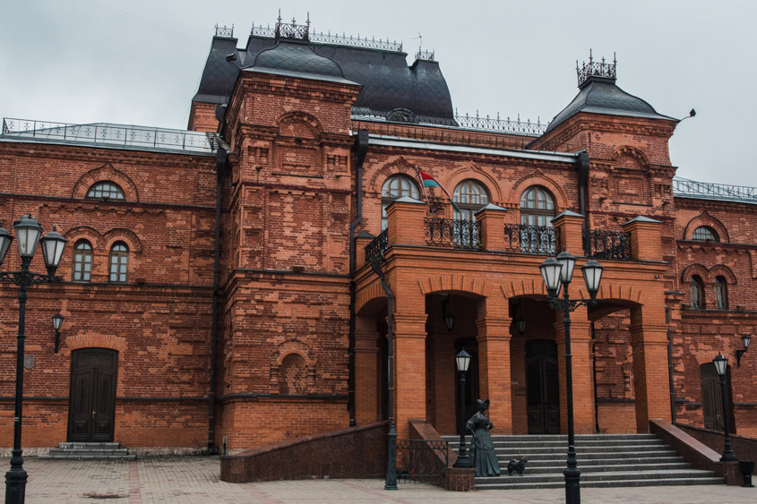
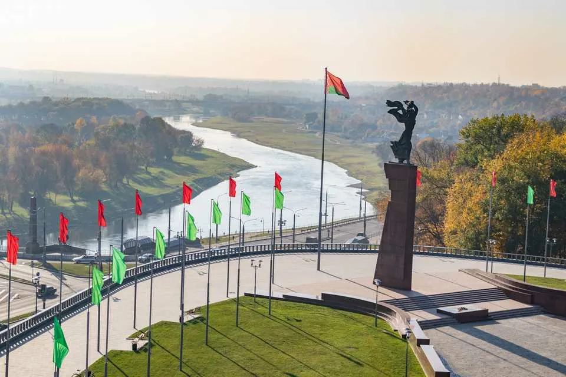
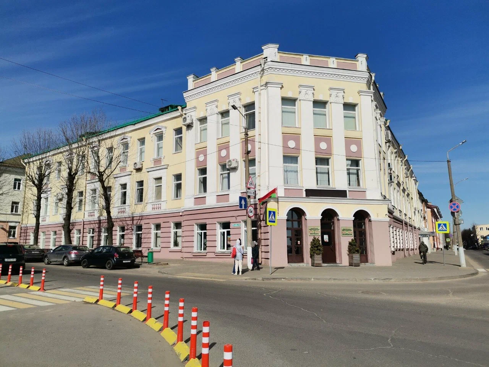
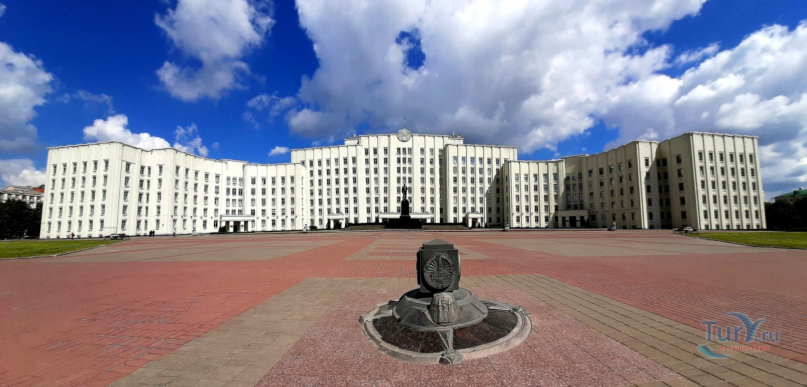